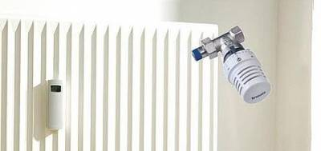

Установка индивидуальных теплосчетчиков в таких зданиях без дорогостоящего переоборудования системы отопления нецелесообразна по экономическим параметрам, поскольку через одну квартиру может проходить несколько стояков отопления с отдельными отводами на радиатор или группу радиаторов и теплосчетчик должен быть установлен в каждый из таких отводов. Стоимость системы учета тепла и сроки ее окупаемости в этом случае превысят все разумные пределы. Распределитель затрат Допримо 3, в отличие от теплосчетчика, устанавливается не в трубопровод отопления, а непосредственно на поверхность каждого радиатора в квартире. Общее количество распределителей в одной квартире может быть достаточно большим, но, в отличие от теплосчетчика, стоимость распределителя невелика и суммарные затраты на создание поквартирной системы учета тепла (включая стоимость необходимых дополнительных комплектующих и стоимость работ по монтажу) оказывается существенно ниже системы с применением теплосчетчиков.
 Необходимое условие создания системы учета на основе распределителей - это установка распределителей на все радиаторы во всем доме. Основные компоненты системы поквартирного учета тепла на основе распределителей:
- общедомовый теплосчетчик — расчет с поставщиком тепла производится по его показаниям;
- распределители затрат Допримо 3 / Допримо 3 Радио — устанавливаются в каждой квартире на каждый радиатор; сумма показаний распределителей в квартире характеризует теплопотребление квартиры, а сумма показаний распределителей по всему дому позволяет рассчитать значение одной единицы, показываемой распределителем (в кВт*час или ГКал);
- радиаторные термостатические вентили — устанавливаются на каждый радиатор в квартире и позволяют жильцам индивидуально регулировать теплопотребление. В отдельных случаях возможно использование шаровых кранов;
Считывание показаний с распределителей можно проводить различными способами:
- Визуальное считывание показаний с дисплея каждого прибора. Данный способ требует обхода всех квартир в доме сотрудником расчетного центра, управляющей компании или представителем правления ТСЖ. Так же жильцы могут самостоятельно снимать показания с распределителей и предоставлять их для составления расчетов;
- Дистанционное считывание показаний по радиоканалу вручную представителем расчетного центра, управляющей компании или сотрудниками ТСЖ, ЖСК. В этом случае используется комплект приборов "мобильный миникомпьютер - управляющее устройство". Оператор обходит все подъезды в здании и, не заходя в квартиры, считывает показания со всех приборов, находящихся в пределах доступности радиосигнала (примерно 3 этажа по вертикали вверх и 3 этажа вниз). Сбор данных со всех приборов в подъезде многоэтажного дома длится около 15-20 минут. Получаемые данные - показания приборов на последний день каждого месяца (12 показаний), показание на последний день прошедшего года и текущее показание прибора на день считывания;
- Полностью автоматическое считывание данных с помощью автономного коммутатора, устанавливаемого на объекте. Коммутатор имеет приемо-передающий блок для считывания данных с приборов и встроенный GPRS-модем для передачи собранных данных на сервер. Подключать коммутатор к питанию или Интернету не нужно. С сервера собранные данные можно получить из любого места (офис, квартира и т.п.), оборудованного интернет-соединением. При отсутствии Интернета, данные могут пересылаться на электронный адрес заказчика или может предоставляться распечатка данных. Один коммутатор может обслуживать до 1000 приборов. Данные предоставляются в виде таблицы с ежедневными показаниями приборов;
Система радиосбора данных предоставляет возможность получения достоверных данных по расходуемым энергоресурсам на объектах без доступа в помещения. Системы радиосчитывания не требуют проведения на объектах сложных монтажных, пусконаладочных работ или установки дорогостоящего оборудования для обеспечения прохождения радиосигналов внутри зданий. Очевидным преимуществом систем радиосчитыванияот является то, что все компоненты системы не требуют обслуживания в течение всего срока службы.
Для дистанционного радиосчитывания данных могут использоваться следующие приборы:
- Распределитель затрат на отопление Допримо 3 Радио. Этот прибор не требует никаких внешних подключений, радиоблок и антенна находятся внутри корпуса. По размерам и способам монтажа прибор полностью аналогичен распределителю Допримо 3. Питание прибора от встроенной батареи, срок службы которой - не менее 10 лет. По истечении срока службы батареи прибор заменяется на новый;
- Счетчики тепла Сенсоник II в компактном и комбинационном исполнении. Для того, чтоб считывать данные по радио, к вычислителю теплосчетчика подключается дополнительный внешний модуль-преобразователь с радиовыходомОптосоник 2 Радио. Можно использовать теплосчетчик Сенсоник II любой модификации, в том числе, уже установленные на объекте. Имеется память для хранения архивов. Питание модуля от встроенной батареи со сроком службы не менее 10 лет. В случае замены теплосчетчика ранее указанного срока, модуль Оптосоник 2 Радио может быть переставлен на новый теплосчетчик и перепрограммирован;
- Квартирные счетчики воды Е-Т Домаква М или Истаметр М. Для радиосчитывания на корпус счетчика воды вместо защитной крышки устанавливается Модуль 3 Радио. После установки и программирования модуля на счетчик надевается пломбировочное кольцо, фиксирующее модуль на счетчике и не позволяющее снять модуль без разрушения пломбы. Модуль имеет память для хранения архива данных. Питание модуля от встроенной батареи со сроком службы не менее 10 лет. В случае замены счетчика ранее указанного времени, модуль может быть переставлен на новый счетчик и перепрограммирован;
- Квартирные счетчики воды других производителей, имеющие импульсный выход. Для радиосчитывания данных с таких счетчиков, их импульсный выход подключается к внешнему модулю-преобразователю с радиовыходомПульсоник 3 Радио. Разрядность импульса модуля-преобразователя программируется в соответствии с разрядностью импульса счетчика воды. Питание преобразователя от встроенной батареи со сроком службы не менее 10 лет;
- Общедомовые счетчики холодной и горячей воды M-T, WS, WP с импульсным выходом или аналогичные счетчики любых других производителей. Такие счетчики включаются в систему радиосчитывания, так же, с использованием модуля-преобразователя Пульсоник 3 Радио;
Считывать данные можно двумя различными способами:
Вручную. При таком способе считывания по подъездам жилого дома или по улицам загородного поселения проходит оператор с комплектом для мобильного считывания. Все данные по всем приборам, находящимся в зоне досягаемости комплекта, собираются в миникомпьютере комплекта и сохраняются там. Процесс считывания отображается на экране миникомпьютера. После окончания считывания все данные из миникомпьютера переносятся в стационарный компьютер для дальнейшего хранения, обработки и использования в расчетных программах.
Отображаемые данные:
- номер радиоблока счетчика
- тип прибора учета
- текущее показание расхода
- статус прибора
- код ошибки (если прибор учета работает неправильно)
- общее количество считанных приборов
- архивные данные (12 значений расхода на последний день каждого из 12 прошедших месяцев, 1 значение на последний день прошедшего года)
Автоматическое считывание.Такой способ сбора данных предусматривает установку на объекте автоматического радиоконцентратораМемоник 3 Радио. Концентратор может считывать данные до 1000 приборов. В большинстве случаев в стандартном многоэтажном жилом доме достаточно установить всего 1 концентратор. Никакие дополнительные промежуточные устройства для связи с радиоблоками приборов учета не требуются. Подключать концентратор к сети 220 В, к Интернету или линиям связи не нужно - это полностью автономное устройство. Питание концентратора от встроенной батареи со сроком службы не менее 10 лет. После истечения срока службы батареи, она заменяется на новую. Концентратор сам объединяет все приборы учета на объекте в единую радиосеть, с определенной периодичностью считывает с них данные по расходам и с помощью встроенного GPRS-модема передает собранные данные на сервер. Администраторы дома и каждый из жильцов квартир в доме имеют авторизованный доступ к серверу для просмотра и скачивания данных. Доступ осуществляется через WEb-интерфейс с любого компьютера или мобильного устройства, имеющего выход в Интернет.
Предоставляемые данные:
- ежесуточные показания приборов учета на 0.00 часов завершившегося дня
- тип прибора учета
- статус каждого прибора на объекте
- коды ошибок (если приборы работают неправильно)
- общее количество приборов на объекте
- количество неисправных приборов (если имеются)
- процент исправных приборов по отношению к общему количеству приборов на объекте
- статус и параметры домовой радиосети
- дата прошедшего считывания данных
- дата следующего считывания данных
- в области данных, предназначенной для жильцов, дополнительно показывается расход ресурсов за каждый прошедший день.